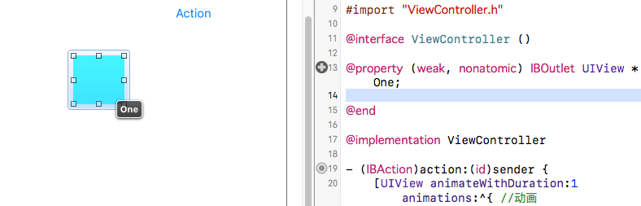
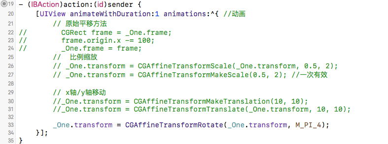

2016/11/10
Author: guoqzuo
iOS transform设置控件平移、旋转、缩放
一般情况下，我们可以通过修改UI控件的x，y轴以及长宽来控制控件的形变，iOS提供了transform属性用来专门来处理控件的形变(平移，旋转，缩放等)。所有的UIView控件都有transform这个属性。

代码实例:

@property (weak, nonatomic) IBOutlet UIView *redView;
@end
@implementation ViewController
- (IBAction)action:(id)sender {
// x+100 ,向右平移100
[UIView animateWithDuration:1 animations:^{ // 动画效果，持续时间1s
// 原始方法平移
//CGRect frame = _redView.frame;
//frame.origin.x += 100;
//_redView.frame = frame;
// MakeTranslation: 基于最开始的位置形变，会把之前的位置情空，一次有效
//_redView.transform = CGAffineTransformMakeTranslation(100, 0);
// 相对于上一次的形变, 这个就和上面的原始方法的效果一致
//_redView.transform = CGAffineTransformTranslate(_redView.transform, 100, 0);
// 旋转 M_PI: 180°、M_PI_2: 90°、M_PI_4:45°
//_redView.transform = CGAffineTransformMakeRotation(M_PI_2);
//_redView.transform = CGAffineTransformRotate(_redView.transform, M_PI_2);
// 按比例缩放
// sx: 宽度缩放比例，sy: 高度缩放比例
_redView.transform = CGAffineTransformScale(_redView.transform, 0.5, 0.5);
//_redView.transform = CGAffineTransformScale(_redView.transform, 2, 2);
}];
}